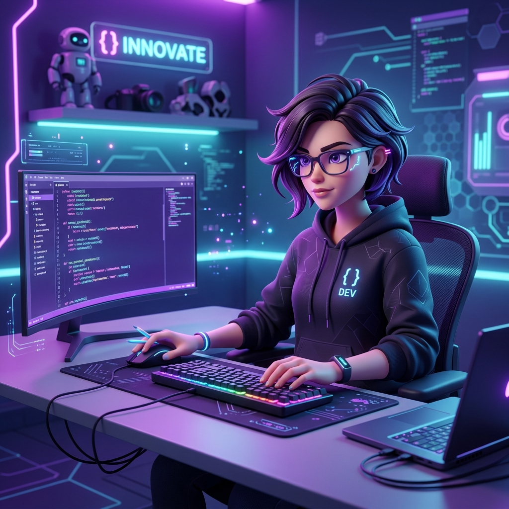

Animación del oso con Rive
Una animación interactiva. En el código de abajo (JavaScript) puedes cambiar la ruta al archivo .riv para mostrar tu propia animación.

Ingeniero en Sistemas
¡Hola! Soy un estudiante de Sistemas,apasionado por la tecnología, el diseño y los videojuegos. Este es uno de mis primero proyectos digitales interactivos, por lo que quiero aprender a usar nuevas herramientas y practicar.
Una animación interactiva. En el código de abajo (JavaScript) puedes cambiar la ruta al archivo .riv para mostrar tu propia animación.
Desarrollo de una interfaz de usuario fluida con enfoque en la experiencia de usuario y diseño responsivo.
